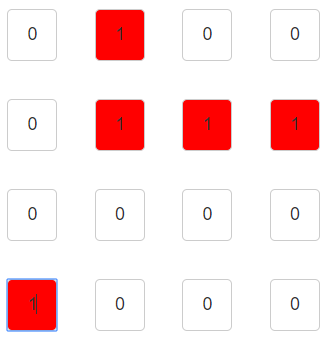

Representaciones matriciales de relaciones binarias
Objetivo
El objetivo es poder analizar propiedades de relaciones binarias a partir de sus matrices booleanas.
Para eso, vamos a genera una matriz del orden que necesitemos, y vamos a marcar cuales son las relaciones (cliqueando sobre la posición en la matriz se pondrá “1”).
Cuando tengamos la relación planteada, podremos ver sus propiedades.

Ejemplo de matriz 4x4
| (0,0) | (0,1) | (0,2) | (0,3) |
| (1,0) | (1,1) | (1,2) | (1,3) |
| (2,0) | (2,1) | (2,2) | (2,3) |
| (3,0) | (3,1) | (3,2) | (3,3) |
Entonces si tuvieramos el conjunto A = {1,4,7,8}, y el producto cartesiano de AxA con la relacion R={(1,4),(4,4),(4,7),(4,8),(8,1)}.
La resperesentación que deberíamos hacer en matriz sería:
